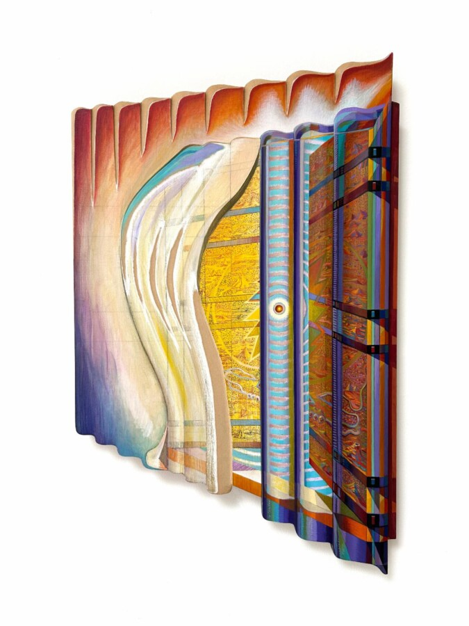

Zach Harris – MetroGnome
Soccer Club Club is pleased to announce “MetroGnome”, a solo-exhibition by Los Angeles-based artist Zach Harris.
“Drawing all life. Deepest into painting. Loving art from all ages. Don’t believe in progress. Only poetry of process. Presence, Imagination, Execution can be one. Value originality and musicality. Roaming churches and museums, I appreciate durational viewing. Long Look Liberation. 2-D is 3-D in 4-D. Continuity of Painting Sculpture Architecture is real. Illusionistic space is real. Where does the art end? Worlds within worlds. Infinite mystical abstractions. Tiny deep-space paintings set in elaborate frame/surrounds. Teaming with figures and images. Hypnotic overtones. Each piece its own making. Many layers many years. Nothing ever finished. Making music for me. Happy to share.”
“MetroGnome” will open in Chicago on Friday, April 10, and will remain on view through May 15. —
Zach Harris was born in 1976 in Santa Rosa, California, USA. He lives and works in Los Angeles, California, USA.
Zach Harris’ carved panel paintings unfold complex utopian and dystopian worlds. His psychedelic visions, which almost verge on abstraction, immerse the viewers into the unfathomable depths of mysterious cosmologies. In a way similar to that Arof late-nineteenth-century symbolism, the art-historical density of his aesthetics is haunting. While the bright coloring of his obsessively detailed paintings is reminiscent of the highly demanding art and ornamental quality of Persian miniature, his intricate hand or laser-engraved frames also evoke the elaborate woodwork of Christian altarpieces.
The meticulous repetition of painted or carved patterns and motifs all over his compositions operates like mantras for this fervent practitioner of meditation. It further creates a hallucinatory play between the materiality of the relief and its optical illusion, which brings to mind the radial vibrancy and the spiritual dimension of Tibetan mandalas.
Zach Harris’ syncretic art suggests timeless rituals, which, whether lost or prescient, have yet to be deciphered.
Harris’ work is included in the collections of the Hammer Museum in Los Angeles, the Santa Barbara Museum of Art, the SCAD Museum of Art and Design in Savannah, Princeton University Art Museum, the Rachofsky Collection in Dallas and the Marciano Art Foundation in Los Angeles.